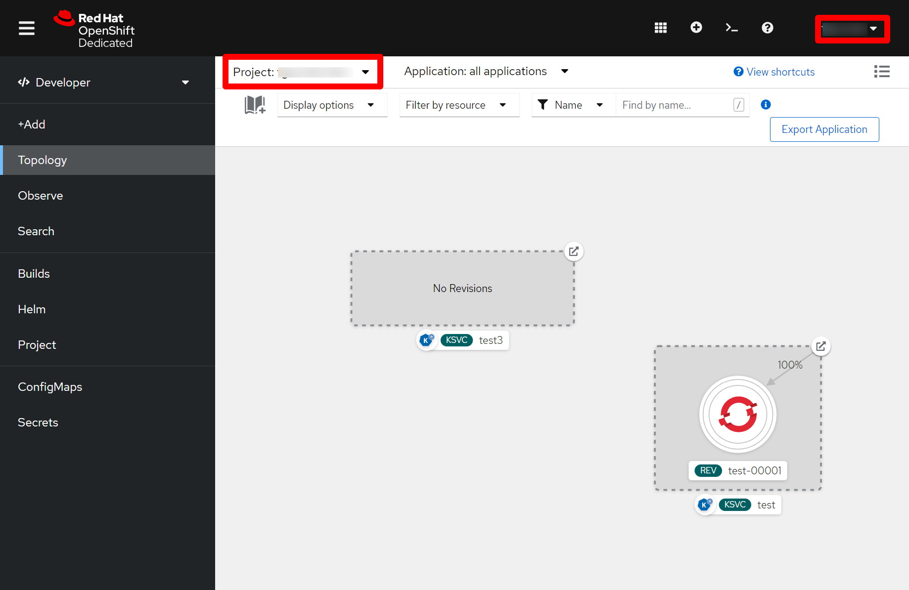

OpenShift integration
Integrate with Red Hat® OpenShift®, an enterprise-ready Kubernetes container platform, allowing your projects to be deployed and tested online.
Setting up KIE Sandbox Extended Services
The KIE Sandbox Extended Services tool is required to proxy requests to an OpenShift instance, thus making it possible to deploy and monitor projects.
-
None.
-
In the Serverless Logic Web Tools, click on the Cog wheel (⚙️) on the top right corner and go to the KIE Sandbox Extended Services tab;
-
If you’re not connected you should see the following message: "You are not connected to KIE Sandbox Extended Services. Click to setup" as well as a Host and Port fields filled with
localhostand21345respectively; -
Click the link in the message and a new window will appear, with your current operating system already selected and a link to download the latest version of the KIE Sandbox Extended Services;
-
Download the file and execute it; (You may need to grant permissions to run the file, depending on your OS and settings!)
-
The contents of the tab should be updated, showing that everything is set and you are connected to the KIE Sandbox Extended Services.
-
Download the KIE Sandbox Extended Services and execute it.
You might need to grant permissions to run the file depending on your operating system and settings.
If you are using macOS, you might encounter the
"KIE Sandbox Extended Services" is damaged and can’t be opened. You should move it to Binwhile running the application "KIE Sandbox Extended Services". This is due to the overeager approach towards security by macOS and you can fix it by moving the "KIE Sandbox Extended Services" application out of quarantine. You can execute thexattr -d com.apple.quarantine /Applications/KIE\ Sandbox\ Extended\ Services.appcommand to achieve this.After executing the KIE Sandbox Extended Services the content in the KIE Sandbox Extended Services is updated and displays that you are connected to the KIE Sandbox Extended Services.
Connecting to your OpenShift instance
-
Have the KIE Sandbox Extended Services tool installed and running;
-
Have an OpenShift instance up (you can create a free developer sandbox here OpenShift Developer Sandbox).
-
Start by logging into your OpenShift instance console interface;
-
You’ll need your OpenShift project name (also known as namespace), the API server and an access token:
-
For the OpenShift project name look at the Topology tab, and in the top left corner you should see your project name;
Figure 1. Getting the OpenShift project name and username menu -
The API server and access token can be obtained by clicking on your username in the top right corner and then on Copy login command. A new page will open with your new API Token as well as an
oc clilogin command, from that command copy the --server= value; Figure 2. Getting the OpenShift access token and API server
Figure 2. Getting the OpenShift access token and API server
-
-
Having all that information, go back to the Serverless Logic Web Tools, click on the Cog wheel (⚙️) on the top right corner and go to the OpenShift tab;
-
Fill the Namespace (project) field with the OpenShift instance project name;
-
Fill the Host field with the value copied from the --server flag;
-
Fill the Token field with the API Token;
-
Now you can click on Connect and if everything is correct the tab should update to show You’re connected to OpenShift.
Now you should be ready to start deploying your projects with the Serverless Logic Web Tools, check how to do it here.
Note: If your OpenShift instance uses self-signed certificates you may need to enable InsecureSkipVerify on KIE Sandbox Extended Services.
Found an issue?
If you find an issue or any misleading information, please feel free to report it here. We really appreciate it!